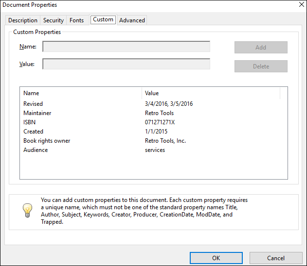

Metadata
DITA has a solid vocabulary for specifying metadata. There are
<prolog> elements in the topics, and
<topicmeta>, <bookmeta> elements in the
bookmaps. They can be used to define authors, dates, audiences, organizations, etc. See: https://www.oxygenxml.com/dita/1.3/specs/archSpec/base/metadata-in-maps-and-topics.html
It is up to you to decide where this information should be presented, in the PDF content or in the PDF document properties.
Metadata - XML Fragment
In the merged
map file, the metadata section is placed inside the
<oxy:front-page> element. This is different from the original
placement in the map or bookmap (after the title), but allows for the usage of information
from it in the title page.
Bookmaps
This is an example of a section taken from a merged bookmap. It only contains some of the
possible metadata elements. The bookmeta metadata section is inherited from
topicmeta:
<bookmap xmlns:ditaarch="http://dita.oasis-open.org/architecture/2005/" xmlns:opentopic-index="http://www.idiominc.com/opentopic/index" cascade="merge" class="- map/map bookmap/bookmap " ditaarch:DITAArchVersion="1.3" > <oxy:front-page xmlns:oxy="http://www.oxygenxml.com/extensions/author"> <bookmeta xmlns:dita-ot="http://dita-ot.sourceforge.net/ns/201007/dita-ot" class="- map/topicmeta bookmap/bookmeta "> <author class="- topic/author ">Howe Tuduit</author> <bookid class="- topic/data bookmap/bookid "> <isbn class="- topic/data bookmap/isbn ">071271271X</isbn> <booknumber class="- topic/data bookmap/booknumber ">SG99-9999-00</booknumber> <maintainer class="- topic/data bookmap/maintainer "> <organization class="- topic/data bookmap/organization ">ACME Tools</organization> <person class="- topic/data bookmap/person "/> </maintainer> </bookid> <bookrights class="- topic/data bookmap/bookrights "> ... <bookowner class="- topic/data bookmap/bookowner "> <organization class="- topic/data bookmap/organization ">ACME Tools, Inc.</organization> </bookowner> </bookrights> </bookmeta> <oxy:front-page-title> ... ...
For the DITA Map PDF - based on HTML5 & CSS
transformation type, the merged map is further processed resulting in a collection
of HTML5 <div> elements. These elements preserve the
original DITA @class attribute values and add a new value derived
from the DITA element name.
<div
class="- map/map bookmap/bookmap bookmap" ... >
<div class=" front-page/front-page front-page">
<div
class="- map/topicmeta bookmap/bookmeta boometa">
<div class="- topic/author author">Howe Tuduit</div>
<div class="- topic/data bookmap/bookid bookid">
<div class="- topic/data bookmap/isbn isbn">071271271X</div>
<div class="- topic/data bookmap/booknumber booknumber">SG99-9999-00</div>
<div class="- topic/data bookmap/maintainer maintainer">
<div class="- topic/data bookmap/organization organization">ACME Tools</div>
<div class="- topic/data bookmap/person person"/>
</div>
</div>
<div class="- topic/data bookmap/bookrights bookrights">
...
<div class="- topic/data bookmap/bookowner bookowner">
<div class="- topic/data bookmap/organization organization">
ACME Tools, Inc.
</div>
</div>
</div>
</div>
<div class=" front-page/front-page-title front-page-title">
...
...
Maps
The maps have a more simple structure, they use the <topicmeta>
element for metadata sections. This is also a simplified example, as there may be many more
elements in the metadata section:
<map xmlns:ditaarch="http://dita.oasis-open.org/architecture/2005/" xmlns:opentopic-index="http://www.idiominc.com/opentopic/index" cascade="merge" class="- map/map " ditaarch:DITAArchVersion="1.3"> ... <oxy:front-page xmlns:oxy="http://www.oxygenxml.com/extensions/author"> <topicmeta class="- map/topicmeta "> <author class="- topic/author ">Dan C</author> <metadata class="- topic/metadata "> <prodinfo class="- topic/prodinfo "> <prodname class="- topic/prodname ">oXygen PDF CSS DITA Plugin</prodname> </prodinfo> </metadata> <audience class="- topic/audience "/> </topicmeta> ...
For the DITA Map PDF - based on HTML5 & CSS
transformation type, the merged map is further processed resulting in a collection
of HTML5 <div> elements. These elements preserve the
original DITA @class attribute values and add a new value derived
from the DITA element name.
<div xmlns:ditaarch="http://dita.oasis-open.org/architecture/2005/" xmlns:opentopic-index="http://www.idiominc.com/opentopic/index" cascade="merge" class="- map/map " ditaarch:DITAArchVersion="1.3"> ... <div class=" front-page/front-page front-page"> <div class="- map/topicmeta topicmeta"> <div class="- topic/author author">Dan C</div> <div class="- topic/metadata metadata"> <div class="- topic/prodinfo prodinfo"> <div class="- topic/prodname prodname">oXygen PDF CSS DITA Plugin</div> </div> </div> <div class="- topic/audience audience"/> </topicmeta> ...
Metadata - Built-in CSS rules
The [PLUGIN_DIR]/css/print/p-meta.css file contains the rules that extract metadata.
How to Create a Searchable PDF
<keyword> or
<indexterm> elements inside bookmaps, maps, or topics. Most of the
search engines will parse the resulting document and extract those keywords and create a
search base.<keyword> and <indexterm>
elements can be combined inside the <keywords> element. They will be
equally processed by the search engine.Bookmaps
<bookmeta>
element:<bookmap>
...
<bookmeta>
<keywords>
<keyword>web server</keyword>
<keyword>hard disk</keyword>
</keywords>
</bookmeta>Maps
<topicmeta>
element:<map>
...
<topicmeta>
<keywords>
<keyword>flowers</keyword>
<indexterm>care and preparation</indexterm>
<keyword>seasons</keyword>
</keywords>
</topicmeta>Topics
<prolog>
element:<topic>
...
<prolog>
<metadata>
<keywords>
<indexterm>iris</indexterm>
</keywords>
</metadata>
</prolog>How to Add the Publication Audience to the Custom PDF Metadata
<topicmeta> element in a <map> as in
the following
example:<map>
...
<topicmeta>
...
<audience type="programmer" job="programming" experiencelevel="expert"/>To collect the @type attribute, add the following in your customization CSS:
*[class ~= "map/map"] > *[class ~= "map/topicmeta"] > *[class ~= "topic/audience"] { -oxy-pdf-meta-custom: "Audience" attr(type); }
*[class ~=
"map/topicmeta"]) instead of topicmeta to cover cases where the
elements are specialized (for instance, in a bookmap the bookmeta is a
topicmeta, so your selector will also function for bookmaps, not only
simple maps. map > to choose the
<topicmeta> that is a direct child of the map, not other
<topicmeta> elements from other <topicref>
elements.The metadata is displayed in the Custom tab of the Document Properties dialog box from Acrobat Reader:
How to Show Metadata in the Cover Page
<bookmap id="taskbook"> <booktitle> <booklibrary>Retro Tools</booklibrary> <mainbooktitle>Product tasks</mainbooktitle> <booktitlealt>Tasks and what they can do</booktitlealt> </booktitle> <bookmeta> <author>Howe Tuduit</author> <critdates> <created date="1/1/2015"/> <revised modified="3/4/2016"/> <revised modified="3/5/2016"/> </critdates> <bookid> <isbn>071271271X</isbn> <booknumber>SG99-9999-00</booknumber> ...
<booktitle> element content is displayed on the first page
of the PDF, so if you need to add the information after it, in your customization CSS, add the following CSS
rules:*[class ~= "bookmap/booktitle"]:after { display: block; content: "by " oxy_xpath('//*[contains(@class, " bookmap/bookmeta ")]/*[contains(@class, " topic/author ")]/text()'); margin-top: 4em; text-align: center; color: gray; } *[class ~= "bookmap/booktitle"]:after(2) { display: block; content: oxy_xpath('if(//*[contains(@class, " bookmap/isbn ")]) then concat("ISBN ", //*[contains(@class, " bookmap/isbn ")]/text()) else ""'); text-align: center; color: gray; }
- oxy_xpath - Executes an XPath expression and returns a string content. Use this whenever you need to extract data from elements other than the one matched by the CSS rule selector.
:after(N)- Creates more than one after pseudo-element. The argument value represents how far the generated content is from the real content. In the example above, the content of the:afteris closer to the title (upper) than the content of the:after(2).
attr() CSS function can also be used but is limited to
extracting attribute values from the matched element.Generating Synthetic Pages for Metadata.
Suppose you need to show this information on a page that follows the title page, instead of on the title page. In this case, you need to prepare a named page and place the content in it. In your customization CSS, add the following CSS rules:
@page page-for-meta { background-color: yellow; /* Just to see it better*/ @top-left-corner { content:""; /* Remove the default header */ } @top-right-corner { content:""; /* Remove the default header */ } } *[class ~= "bookmap/booktitle"]:after { page: page-for-meta; } *[class ~= "bookmap/booktitle"]:after(2) { page: page-for-meta; }
How to Show Metadata in the Header or Footer
The header and footer are composed of page margin boxes that can be populated with static text by using string-sets.
*[class ~= "front-page/front-page"] > *[class ~= "map/topicmeta"] > *[class ~= "topic/critdates"] > *[class ~= "topic/created"]{ string-set: mapcreated attr(date); } @page front-page { @top-center { content: "Created: " string(mapcreated); } }
How to Remove or Change the PDF Keywords
The keywords defined in the prolog sections of topics are automatically collected and set as PDF keywords. These are shown by the readers in the PDF document properties window.
If you need to remove them, you can use the following CSS snippet in your customization CSS:
:root {
-oxy-pdf-meta-keywords:"";
}
To change them, if you have a hard-coded list, you just enumerate each of them in the property content, separating them with comma:
:root {
-oxy-pdf-meta-keywords:"alpha, beta, gamma";
}
If you need to extract them by other criteria from the merged map, you can use the oxy_xpath() function instead of the hard-coded
list.
How to Change the PDF Publication Title Property
The <title> element of a bookmap is quite complex and contains
elements for the book library and an alternate title:
<booktitle>
<booklibrary>Retro Tools</booklibrary>
<mainbooktitle>Main Book Title</mainbooktitle>
<booktitlealt>Book Title Alternative</booktitlealt>
</booktitle>
For the publication title, the built-in CSS uses only the content of the
<mainbooktitle>. If you want to collect all of the text from the
<booktitle>, you can add the following rule to your customization CSS:
:root {
-oxy-pdf-meta-title: oxy_xpath('(//*[contains(@class, "bookmap/booktitlealt")])[1]/text()');
-oxy-pdf-meta-description: "";
}
An XPath expression is used to collect all the <booktitlealt> elements
from the merged map, select the first one, then use its text.
The built-in CSS uses the <booktitlealt> as the PDF description. In the
example above, this property is cleared since it was moved as a title.
How to Use a Key Value from the Map in the CSS
To use a key value in the CSS, the key must be referenced from the content (either a topic or map).
If you do not have it referenced, you may force a reference by using the
<topicmeta> or <bookmeta> section of your map
and a <data> element. This has no effect on the published content, but
allows the CSS rules to use its content.
<bookmeta>
....
<data keyref="my_key"/>
....
</bookmeta>
This is expanded in the merged HTML file to:
<div class="- map/topicmeta bookmap/bookmeta topicmeta bookmeta"> ... <div keyref="my_key" class="- topic/data data"> <div class="- topic/keyword keyword">KEY VALUE</div> </div> ... </div>
Suppose that you need the expanded key value in the footer of the publication. You can define a
string-set on this data element:
*[class ~= "topic/data"][keyref="my_key"] { string-set: key-string content(text); } @page { @bottom-left { content: "My key is: " string(key-string) !important; } }
Or you can use the value from a :before pseudo-element, like the one for the
title:
*[class ~= "topic/title"]:before { content: oxy_xpath("//*[contains(@class, 'topic/data')][@keyref = 'my_key']//text()"); }
Another use-case is to use the key as a source for a custom PDF document property:
*[class ~= "topic/data"][keyref="my_key"] { -oxy-pdf-meta-custom: attr(keyref) content(text); }